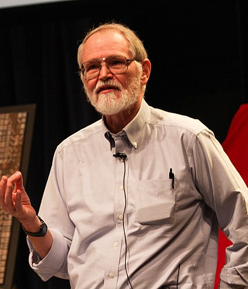
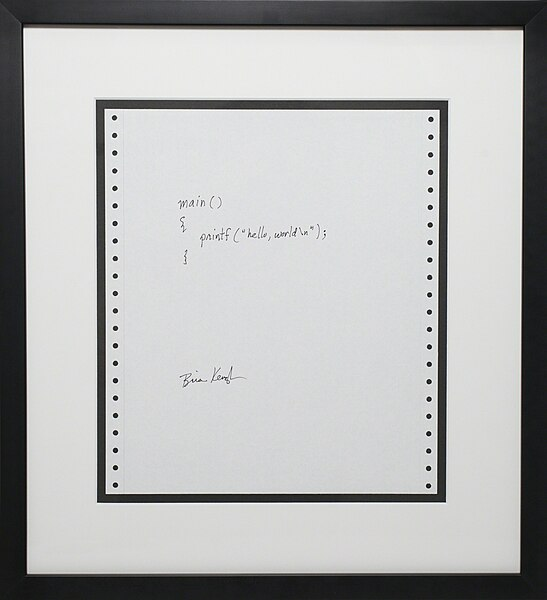
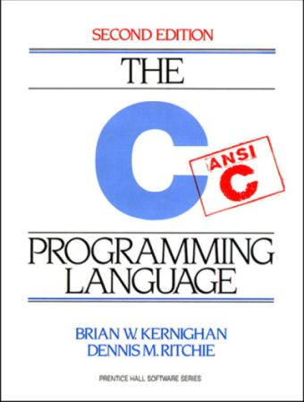
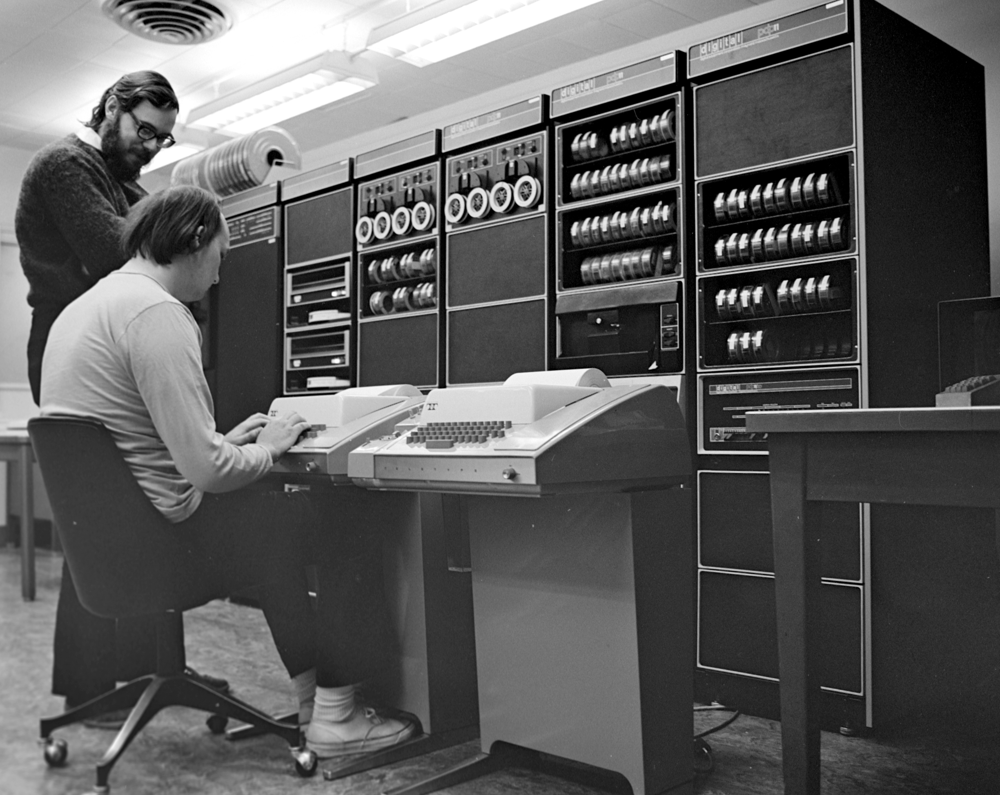
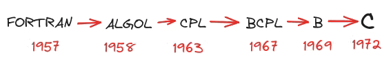

📜 History of C
C, is a pretty old language. It was developed during the UNIX project. The development of UNIX led to the creation of C, and in turn, C played a significant role in the success of UNIX.
Now let’s go back 55 years, to 1969…
70s
In 1969, Ken Thompson began creating a programming language named B, which was a simpler version of an existing language called BCPL [1]. Then, in 1971, Dennis Ritchie took over and started enhancing B. He first called his improved version New B or NB for short. After making several changes, Ritchie realized his version was distinct enough to deserve its own name.
Dennis Ritchie at Japan Prize Foundation ceremony in May 2011. Link
So, in 1972, he named it C, marking the birth of the C language we know today.
But, why the name C?
To my best knowledge, it is commonly thought that Dennis Ritchie chose the name ‘C’ because it follows ‘B’ in the alphabet, and C evolved from the B programming language [2]. Another less common theory is as follows. We know that B had derived from BCPL. Ritchie chose the name C because the letter after B is C in BCPL. If there was a third language after C, that would be P language, not D. Incidentally, while there is a D programming language, it isn’t regarded as a direct successor to C. The language that directly derives from and builds upon C is C++.
Just six years after C was created, in 1978, Brian Kernighan and Dennis Ritchie released The C Programming Language book.

Brian Kernighan speaks at a tribute to Dennis Ritchie at Bells Labs in 2012. Link
This book remains famous even today. The version of C it explains is known as K&R C. Since C wasn’t standardized back then like it is today, this book became the unofficial standard.

Sometimes, the C version in this book is referred to as C78, although this term is rarely used. Notably, this is one of the first programming books to feature the classical Hello World example.
printf("hello, world\n");

Now, let’s move forward in time to the 11th year of C, a few years before the release of the CD-ROM [3], to the year 1983.
80s
Back in 1983, the American National Standards Institute (ANSI) set up the first committee to create a standard for the C programming language. By 1989, they released the first official C standard, also known as C89. The following year, in 1990, the International Organization for Standardization (ISO) adopted this standard. They made some minor changes and released their version also known as C90. Interestingly, four of them refer to the same standard, and nowadays, people use these terms interchangeably.
ANSI C ≡ C89 ≡ ISO C ≡ C90
Before 1989, the C programming language was primarily defined by the version in ‘The C Programming Language’ book, often referred to as K&R C. The authors of this book released a second edition in 1988, which included details about the C89 standard [4].

The C Programming Language, second edition, 1988.
It’s important to note that, following the first standard, all subsequent C standards have been published exclusively by the International Organization for Standardization (ISO), with the American National Standards Institute (ANSI) not releasing any more.
The version of C used from its inception around 1970 until the first official standard in 1989 is often referred to as classic C or traditional C.
Now we fast forward about 10 years to one year after the publication of the first C++ standard, arriving in 1999.
90s
Four years earlier, in 1995, the C95 standard was released. This standard introduced several internationalization features, including improved support for multi-byte and wide characters, which was a significant addition for handling diverse character sets in C programming. Apart from these additions, there were no major changes in the language.
C95 ≈ C90
In contrast, the C99 standard, published in 1999, introduced many significant changes and additions to the language. As a result, it is widely recognized that the first major revision of the language after C90 occurred with the advent of C99.
One reason for this is that some features present in the first official release of C++, C++98, were added to the C language. C++ was built on top of C, and some features defined in C++ also officially came to the C language with C99.
Important
Please note that the C supported in C++ isn’t exactly the same as the C programming language.
2000s
The C11 standard, the third major update to the C programming language, was launched in 2011, a full 12 years after C99. The introduction of features like multi-threading support in C11 was a step towards updating the language, enhancing its safety, adaptability, and alignment with current programming trends and technological advancements. However, a significant portion of C programming, particularly in the embedded systems sector, remains consistent with either C99 or the older C89 standard. Therefore, a significant portion of C projects do not use or have the features introduced with C11.
The C17 standard, an update to the C programming language standard, was officially published in 2018. C17 is primarily a bug-fix release and does not introduce new language features. It was intended to correct various defects in the C11 standard. From a technical perspective, these two standards are considered to be the same.
C17 ≈ C11
The next standard following C17 is C23, which is nearing its finalization. It is anticipated to be officially published in 2024 [5], [6], [7].
Standards Summarized
In the table provided, you’ll find a concise summary of all the standards. While each standard is designated an official name, they are commonly known by their informal names. It’s important to note again that the C23 standard has not been officially finalized. Now, let’s embark on a final journey back in time to 1964 and delve deeper into the relationship between UNIX and C, as we briefly touched upon at the start of this article.
Year |
Informal Name(s) |
Formal Standard Name(s) |
|---|---|---|
1970s |
classic C, traditional C |
- |
1978 |
K&R C, C78 |
- |
1989/1990 |
ANSI C, ISO C, C89, C90 |
ISO/IEC 9899:1990, ANSI X3.159-1989(?) |
1995 |
C95 |
ISO/IEC 9899:1990/AMD1:1995 |
1999 |
C99 |
ISO/IEC 9899:1999 |
2011 |
C11 |
ISO/IEC 9899:2011 |
2018 |
C17, C18 |
ISO/IEC 9899:2018 |
2024 |
C23 |
ISO/IEC 9899:2024 |
At that moment, C23 is expected to finalized in 2024.
UNIX and C
In 1964, MIT initiated the Multics project with the primary goal of developing a time-sharing operating system. This system aimed to maximize the utilization of expensive computer resources by allowing multiple users to access the computer simultaneously. The Multics project was a collaboration among three major entities: MIT, General Electric, and Bell Labs. Ken Thompson was one of the key contributors from Bell Labs. However, in 1969 [8], after a period of involvement, Bell Labs, possibly due to economic reasons, withdrew from the Multics project. Subsequently, they embarked on their own endeavor to develop a distinct operating system, which eventually led to the creation of UNIX, well actually “Unics”(UNiplexed Information and Computing System) [9].
Ken Thompson from a National Inventors Hall of Fame video about him and Dennis Ritchie in 2019. Link
The name ‘Unix’ is indeed a kind of wordplay or pun. The ‘Uni’ in Unix was intended as a contrast to the ‘Multi’ in ‘Multics,’ where ‘Multi’ stood for ‘Multiplexed.’ While Multics was a complex project aimed at creating a multi-user, multi-tasking operating system, Unix was originally developed as a simpler, less complex alternative. The ‘Uni’ in Unix humorously suggests a more ‘uniplexed’ or singular approach, even though Unix was also designed for multi-user environments [10]. Thus, the naming reflects a play on words while highlighting the difference in design philosophy between Unix and Multics.
In 1969, the same year Linus Torvalds was born, Ken Thompson and his colleagues at Bell Labs began working on the DEC PDP-7, where they initially implemented UNIX in assembly language. The following year, in 1970, UNIX was rewritten for the DEC PDP-11, once again in assembly. While assembly language was used for the core components, the development of system and application software, which did not require direct hardware interaction, called for a higher-level language. At that time, BCPL, a language renowned for its use in operating systems, was quite popular. BCPL itself was derived from CPL, which is a successor of Algol.

Ken Thompson (sitting) and Dennis Ritchie at PDP-11 in 1972. Origin
Ken Thompson, during his involvement in the Multics project, created the B language, influenced by his experience with BCPL. Later at Bell Labs, Dennis Ritchie evolved the B language into the C language. This development marked a significant step in programming, linking back to Algol as an ancestral language. It’s notable that during these early stages, even with the advent of higher-level languages, key parts of UNIX were still being written in assembly. This underscores the fact that the UNIX project predates the C language, highlighting its evolutionary journey in computing history.
A few years after its inception, the C language had matured sufficiently, prompting the decision to rewrite the entire UNIX operating system using it. This rewrite, completed with UNIX Fourth Edition (UNIX V4) in 1973, stands as a landmark achievement for C [11]. In the contemporary landscape, many consider C a low-level language, especially when compared to higher-level languages like Python and C#. However, in the context of its time, employing C for most parts of an operating system was a groundbreaking move.
Historically, porting an operating system written in assembly language to a different architecture was a daunting task, often fraught with time-consuming, error-prone challenges. In contrast, C offered a more portable solution. Once a C compiler was created for the target architecture, it became significantly easier to port programs. UNIX exemplified this advantage. Although it contained some architecture-dependent assembly code, the bulk of the system was written in portable C, a strategic choice that greatly facilitated its adaptation and spread across different computing environments.
Since UNIX and C developed in tandem, the first authoritative book on C, ‘The C Programming Language’ by Brian Kernighan and Dennis Ritchie, commonly referred to as K&R, published in 1978, not only covers the C language but also delves into UNIX programming. This book, written by the creators of C and key developers of UNIX at Bell Labs, became a seminal guide in the field. It effectively demonstrates the use of C for system programming, particularly in the UNIX environment, reflecting the intertwined evolution of the language and the operating system.
If we delve into the history of programming languages, it’s evident that most are influenced by their predecessors. Tracing back the lineage of C, we encounter FORTRAN, a foundational language in this evolutionary chain. Just as C was shaped by its ancestors like FORTRAN, it has in turn influenced many contemporary programming languages. This includes, but is not limited to, C++, Java, Python, and C#. Each of these modern languages has inherited features from C, demonstrating its enduring impact on the world of programming.

FORTRAN to C
Long live C!
Today, in 2024, the C programming language celebrates its 52nd year. Despite its age, C remains vibrantly alive, continually evolving through new standards. Crafted by some of the most brilliant minds in programming, with precision, foresight, and impeccable timing, C has proven to be a language not just of the past, but of the present and future. It is the powerhouse behind the world’s most critical technologies, underpinning nearly every operating system, forming the backbone of the Internet, and playing a crucial role in space exploration, healthcare, and the vast realm of embedded systems. C is still a fundamental part of education for students and newcomers to programming. Long may it continue to shape our world. Long live C!
Resources
Personal notes from Necati Ergin’s C Course
Kaan Aslan’s C notes (in Turkish)
Personal notes from Kaan Aslan’s Unix/Linux System Programming Course
Personal notes from Kaan Aslan’s in-house C training
The Linux Programming Interface, Michael Kerrisk, A Brief History of UNIX and C
Changelog
2023-11-25. Corrections and additions to UNIX and C.
2024-01-04. Rewritten and reorganized form scratch

{kind=link}
.jpg){kind=link}
{kind=link}
{kind=link}
{kind=link}